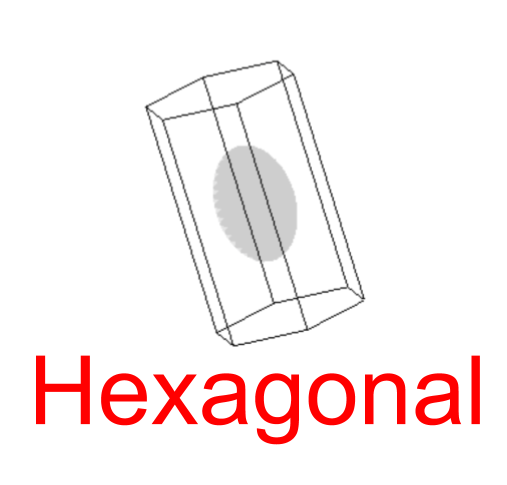
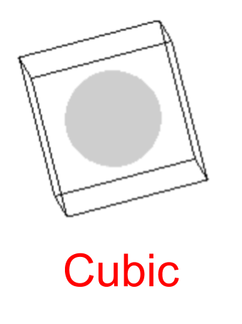
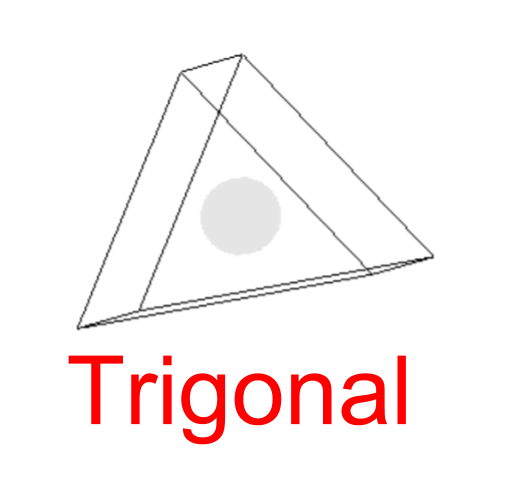

<!--Some of the code for orientationDropdowns was obtainted and modified from 
https://stackoverflow.com/questions/33573703/changing-iframe-src-via-drop-down-menu-doesnt-load-new-iframe-->
      
<html>
<body bgcolor=#262626>
	<style>	
		
	/*Crystal structure button CSS formatting.*/
	.crystalStructure {
		background-color: #ffffff;
		border: solid;
		border-width: thin;
		padding: 5px 5px;
		text-align: center;
		text-decoration: none;
		display: inline-block;
		font-size: 16px;
		margin: 4px 2px;
		cursor: pointer;}
		
		#menu {
	float: left;
}

		header {
width: 400px;
text-align: center;
}
		
		
		
#content {
	float: left;
}
		.onoffswitch {
    position: relative; width: 90px;
    -webkit-user-select:none; -moz-user-select:none; -ms-user-select: none;
}
.onoffswitch-checkbox {
    display: none;
}
.onoffswitch-label {
    display: block; overflow: hidden; cursor: pointer;
    border: 2px solid #999999; border-radius: 20px;
}
.onoffswitch-inner {
    display: block; width: 200%; margin-left: -100%;
    transition: margin 0.3s ease-in 0s;
}
.onoffswitch-inner:before, .onoffswitch-inner:after {
    display: block; float: left; width: 50%; height: 30px; padding: 0; line-height: 30px;
    font-size: 14px; color: white; font-family: Trebuchet, Arial, sans-serif; font-weight: bold;
    box-sizing: border-box;
}
.onoffswitch-inner:before {
    content: "ON";
    padding-left: 10px;
    background-color: #ff0000; color: #FFFFFF;
}
.onoffswitch-inner:after {
    content: "OFF";
    padding-right: 10px;
    background-color: #EEEEEE; color: #999999;
    text-align: right;
}
.onoffswitch-switch {
    display: block; width: 18px; margin: 6px;
    background: #FFFFFF;
    position: absolute; top: 0; bottom: 0;
    right: 56px;
    border: 2px solid #999999; border-radius: 20px;
    transition: all 0.3s ease-in 0s; 
}
.onoffswitch-checkbox:checked + .onoffswitch-label .onoffswitch-inner {
    margin-left: 0;
}
.onoffswitch-checkbox:checked + .onoffswitch-label .onoffswitch-switch {
    right: 0px; 
}
		
	
		
		/* Style the header */
		
		body {
  margin: 0;
}
.header {
    background-color: #ff0000;
    padding: 20px;
    text-align: center;
}
	
#optionsLabel{display: flex; justify-content: center; 
	font-family: Times;
	color: #FFFFFF;
	font-size:30px;
}

#crossSectionOnOffSwitch
	{display: flex; justify-content: left; 
	font-family:Times;
	color: #FFFFFF;
	font-size:20px;
}
		
#my_centered_buttons { display: flex; justify-content: center; }		
		
	</style>
	
	
	<head>
		<title>Crystal</title>
		<script src="lib/three.js"></script>
		<script src="lib/jquery.slim.js"></script>
	</head>

	<body>
		
		<div class="header">
  <h1>Optical Crystallography</h1>
</div>
	
		<div id="optionsLabel">Crystal Structure Options</div>
			
			
		
		
		
		<div id="my_centered_buttons">
		<button class="crystalStructure hexagonalPrism"  id="hexagonalPrism" name="hexagonalPrism" value="hexagonalPrism"></button>
		<button class="crystalStructure cubicPrism"  id="cubicPrism"  name="cubicPrism" value="cubicPrism"></button>
		<button class="crystalStructure trigonalPrism"  id="trigonalPrism"  name="trigonalPrism" value="trigonalPrism"></button>
		</div>
<!--
		Crystallographic Axis <input type="checkbox" id="crystallographicCheck">
		Optic Axis <input type="checkbox" id="opticCheck">
-->
<div id="crossSectionOnOffSwitch"> Turn Cross Sections On/Off </div>
		
	
		<div class="onoffswitch">
		
    <input type="checkbox" name="onoffswitch" class="onoffswitch-checkbox" id="myonoffswitch" checked>
    <label class="onoffswitch-label" for="myonoffswitch">
        <span class="onoffswitch-inner" ></span>
        <span class="onoffswitch-switch"></span>
    </label>
			
				<script src="app/crystal.js"></script>
</div>

			

		
		
</body>
</html>
